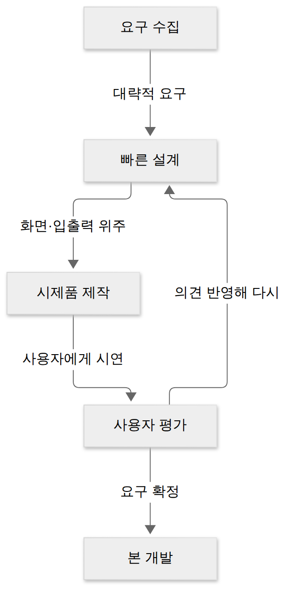

D018 · 방법론 선정 — 생명주기 모델·개발 방법론·요구공학 방법론
A5 어제 D017로 A4 인터페이스 설계를 마쳤어요. 지금까지 우리는 요구사항을 모으고(A1), 화면을 설계하고(A2), 구조와 패턴을 고르고(A3), 시스템끼리 대화하는 규칙을 정했어요(A4). 그런데 한 걸음 물러나 보면 질문이 하나 남아요. 이 모든 일을 어떤 순서로, 어떤 관점으로 진행할 것인가? 오늘부터 시작하는 A5 「소프트웨어개발 방법론 활용」이 바로 그 질문에 답하는 단원이고, 첫 세세항목인 방법론 선정은 프로젝트를 시작하기 전에 “우리 팀은 어떤 틀로 일할지”를 고르는 일이에요. 오늘은 그 틀을 이루는 세 가지 — 생명주기 모델, 개발 방법론, 요구공학 방법론 — 을 하나씩 보고, 셋이 서로 다른 층위라는 점을 확실히 구별해요.
- 소프트웨어 생명주기 모델(폭포수·프로토타입·나선형·반복/점진·애자일)을 특징과 어울리는 상황으로 구별할 수 있다
- 개발 방법론(구조적·정보공학·객체지향·CBD·제품 계열·애자일)을 “무엇을 중심으로 보는가”(처리·데이터·객체·컴포넌트·공통 자산)로 구별할 수 있다
- 요구공학 방법론의 활동(도출·분석·명세·확인 + 관리)을 설명하고 D001·D006에서 배운 내용과 연결할 수 있다
- 생명주기 모델·개발 방법론·요구공학 방법론이 서로 다른 층위(흐름 · 관점 · 요구 활동)라는 점을 설명하고, 섞어 낸 선지를 골라낼 수 있다
1. 큰 그림 — 이름은 비슷해도 맡은 질문이 다르다
프로젝트를 시작하는 팀이 정해야 할 것을 떠올려 보면 세 가지 질문이 나와요. 첫째, 일을 어떤 순서로 진행할까? — 분석을 다 끝내고 설계로 넘어갈지, 2주마다 조금씩 만들어 보여 줄지. 둘째, 시스템을 어떤 관점으로 쪼개 볼까? — 처리 흐름(기능) 단위로 나눌지, 데이터 단위로 나눌지, 객체 단위로 나눌지. 셋째, 고객이 원하는 것을 어떻게 찾고 지킬까? — 요구를 어떻게 끌어내고, 적고, 바뀔 때 어떻게 통제할지. 이 세 질문에 각각 답하는 것이 생명주기 모델, 개발 방법론, 요구공학 방법론이에요.
여행으로 치면 생명주기 모델은 일정표(며칠째에 어디로 갈지), 개발 방법론은 여행 스타일(맛집 위주냐 박물관 위주냐), 요구공학은 동행자 취향 조사예요. 일정표와 스타일은 따로 골라서 조합할 수 있고, 취향 조사는 어느 조합을 고르든 빠질 수 없어요. 일정표만 멋지게 짜고 취향 조사를 건너뛰면 셋째 날쯤 누군가 말없이 숙소에 남겠다고 하죠. 실제로도 “폭포수 흐름 + 정보공학 관점”, “애자일 흐름 + 객체지향 관점”처럼 두 층위를 조합해서 쓰고, 요구공학 활동은 어느 조합이든 들어가요(언제, 몇 번 하느냐만 달라요).
그림에서 애자일이 두 칸에 모두 있는 게 눈에 띌 거예요. 애자일은 “짧게 반복한다”는 흐름이면서 동시에 “사람과 협력, 변화 대응을 중심에 둔다”는 일하는 관점이기도 해서, 교재마다 생명주기 모델 목록에도, 개발 방법론 목록에도 넣어요. 시험에서도 두 맥락 모두로 나오니, “애자일은 양쪽에 다 있다”고 기억해 두면 돼요.
2. 생명주기 모델 — 앞 모델의 약점을 고치며 이어진 계보
큰 그림에서 첫 번째 층위가 “일의 흐름”이라고 했어요. 소프트웨어 생명주기(SDLC)는 소프트웨어를 구상하는 순간부터 개발·운용·유지보수를 거쳐 폐기될 때까지의 전 과정을 단계로 나눈 것이고, 생명주기 모델은 그 단계들을 어떤 순서·반복 방식으로 진행할지 정한 틀이에요. 생명주기 모델들은 따로 발명된 게 아니라, 앞 모델에서 생긴 문제를 고치려고 차례로 나왔어요. 그 계보로 읽으면 각 모델의 특징이 외울 대상이 아니라 이유가 있는 선택으로 보여요.
폭포수 모델 — 출발점
폭포수 모델(Waterfall)은 타당성 검토 → 계획 → 요구 분석 → 설계 → 구현 → 테스트 → 유지보수를 한 단계씩 순서대로 진행하고, 각 단계가 끝날 때 산출물을 검토·승인한 뒤 다음 단계로 넘어가는 선형 순차적 모델이에요. 가장 오래되고 널리 쓰인 고전적 모델이라 “고전적 생명주기 모델”이라고도 불러요. 단계와 산출물이 분명해서 관리하기 쉽고 진척을 보고하기 좋다는 장점이 있어요. 대가는 요구사항이 처음에 확정돼 있어야 한다는 점이에요. 고객은 실제로 돌아가는 소프트웨어를 마지막 단계에 가서야 처음 보는데, 그때 “이게 아닌데요”가 나오면 되돌아가는 비용이 매우 커요. 그래서 요구가 명확하고 잘 바뀌지 않는 프로젝트(법령으로 정해진 업무, 이미 해 본 유형의 시스템)에 어울려요. 폭포수의 변형인 V-모델은 왼쪽 개발 단계마다 오른쪽 테스트 단계를 짝지어 검증을 강조한 모델로, D003에서 본 그대로예요(D003 다시 보기).
프로토타입 모델 — “일단 보여 주세요”에 답하기
폭포수의 가장 큰 약점은 “고객이 결과물을 너무 늦게 본다”는 것이었어요. 프로토타입 모델(Prototyping)은 이 문제를 정면으로 풀어요. 정의하면, 사용자의 요구사항을 정확히 파악하기 위해 실제 개발될 소프트웨어의 견본(시제품, prototype)을 먼저 만들어 사용자에게 보여 주고, 평가를 받아 요구를 확정해 가는 모델이에요. 진행은 요구 수집 → 빠른 설계 → 시제품 제작 → 사용자 평가 → (불만족이면 다시 설계·수정) → 요구가 확정되면 본 개발 순서예요. 시제품은 주로 화면·입출력 위주로 빠르게 만든 껍데기라서, 고객이 “이 버튼은 여기 있어야 해요” 같은 구체적인 말을 하게 만들어 줘요. 즉 프로토타입은 요구 도출 도구 역할을 하는 생명주기 모델이에요(A1의 요구분석기법 중 프로토타이핑과 같은 아이디어예요).
시제품을 어떻게 처리하느냐에 따라 둘로 나뉘어요. 요구 확인이 끝나면 버리고 본 개발을 새로 하는 폐기형(throwaway), 시제품을 계속 다듬어 실제 시스템으로 키우는 진화형(evolutionary)이에요. 장점은 요구 오해가 줄고 사용자가 개발에 참여한다는 점, 대가는 시제품 반복에 시간·비용이 들고 무엇보다 사용자가 시제품을 완성품으로 오해하기 쉽다는 점이에요. 그럴듯하게 잘 만든 시안을 보여 주면 고객이 반가운 얼굴로 “그럼 이거 다음 주에 오픈하는 거죠?”라고 묻는데, 그 화면 뒤에는 DB도 예외 처리도 없다는 걸 설명하는 순간이 프로토타입 모델의 진짜 난관이에요.

위 흐름에서 핵심은 평가 → 다시 설계로 돌아가는 고리예요. 폭포수가 “되돌아가기 어렵다”였다면, 프로토타입은 요구가 확정될 때까지 일부러 되돌아가도록 설계됐어요.
나선형 모델 — 위험부터 따지고 한 바퀴씩
프로토타입은 요구 문제를 풀었지만, 대형 프로젝트에서 정말 무서운 건 요구 오해만이 아니에요. 신기술이 기대만큼 성능이 안 나오거나, 일정·예산이 터지거나, 외부 시스템 연동이 막히는 위험(risk)이 있죠. 나선형 모델(Spiral)은 보헴(Boehm)이 제안한 모델로, 폭포수의 체계성과 프로토타입의 반복을 결합하고 여기에 위험 분석을 더해 나선을 그리듯 여러 번 반복하며 점점 완성도를 높여요. 한 바퀴는 네 단계로 이뤄져요.
- ① 계획 수립(계획 및 정의) — 이번 바퀴의 목표·대안·제약 조건을 정해요.
- ② 위험 분석 — 대안마다 위험 요소를 찾아 평가하고, 위험을 줄일 방법(시제품, 시뮬레이션 등)을 정해요. 나선형 모델의 정체성이 여기 있어요.
- ③ 개발(공학적 개발) — 이번 바퀴의 결과물을 실제로 만들고 검증해요.
- ④ 고객 평가 — 고객이 결과물을 평가하고, 그 결과로 다음 바퀴 계획을 세워요.
나선형의 장점은 위험을 바퀴마다 미리 걸러 내니 대규모·고위험 프로젝트에 적합하고, 반복하면서 요구 변경도 받아들일 수 있다는 점이에요. 대가는 위험을 제대로 분석할 전문가가 필요하고, 관리가 복잡하며, 반복 횟수가 늘면 기간과 비용이 커진다는 점이에요. 성격으로 치면 나선형은 걱정 많은 PM이에요. 한 바퀴 돌 때마다 “이번엔 뭐가 터질까”부터 회의하고 나서야 코드를 쓰니, 대형 국책 사업에서는 든든하지만 열흘짜리 사내 도구에 쓰면 위험 분석 회의가 개발보다 길어져요. 참고로 D003에서 정리했듯 나선형은 반복형이지만 애자일로 분류하지 않아요(계획·문서·위험 분석이 무거운 모델이라서요).
반복적·점진적 모델 — 쪼개서 여러 번 내보내기
나선형이 “위험”을 기준으로 반복했다면, 반복적·점진적 모델(Iterative·Incremental)은 “결과물”을 기준으로 반복해요. 시스템 전체를 한 번에 완성하지 않고, 여러 번의 개발 주기로 나눠 조금씩 완성해 가는 방식이에요. 두 말에는 미묘한 차이가 있어요. 점진적(증분형)은 시스템을 기능 단위의 증분(increment)으로 나눠 핵심 기능부터 하나씩 덧붙여 나가는 쪽이고(1차 릴리스 회원·주문, 2차 쿠폰, 3차 추천), 반복적은 전체를 거칠게 먼저 만든 뒤 반복할 때마다 다듬어 완성도를 높이는 쪽이에요. 실무에서는 둘을 함께 쓰는 경우가 많아 묶어서 불러요. 사용자는 일찍부터 일부 기능을 써 볼 수 있고, 각 주기의 결과를 보고 다음 주기를 조정할 수 있어요. 대가는 처음에 전체 구조를 잘 잡아 두지 않으면 증분을 붙일 때마다 구조가 흔들린다는 점이에요.
애자일 — 반복을 짧게, 사람을 가운데에
반복적·점진적 모델의 주기를 몇 주 단위로 아주 짧게 줄이고, 문서보다 동작하는 소프트웨어, 계약보다 고객 협력, 계획 준수보다 변화 대응을 중시하는 가치관을 얹은 것이 애자일(Agile)이에요. 스크럼·XP·린·칸반 같은 구체적 방법이 여기에 속해요. 애자일 선언 네 가지 가치와 스크럼의 역할·이벤트는 D003·D009에서 자세히 봤으니 여기서는 계보 속 위치만 기억해 두세요: 폭포수(한 번에) → 프로토타입(요구 확인 반복) → 나선형(위험 분석 반복) → 반복/점진(결과물 반복) → 애자일(짧은 반복 + 협력 가치).
한 장 요약 — 위에서 문단으로 설명한 다섯 모델을 “무엇을 고치려고 나왔나”와 “어울리는 상황”으로 정리하면 이렇게 돼요.
| 모델 | 핵심 아이디어 | 어울리는 상황 |
|---|---|---|
| 폭포수 | 단계를 순서대로 한 번에, 단계별 산출물 검토 후 다음 단계 | 요구가 명확하고 잘 안 바뀌는 프로젝트 |
| 프로토타입 | 시제품을 먼저 보여 주고 평가받아 요구 확정(폐기형·진화형) | 사용자가 요구를 말로 설명하기 어려울 때 |
| 나선형 | 계획 → 위험 분석 → 개발 → 고객 평가를 반복(Boehm) | 대규모·고위험, 위험 관리가 중요할 때 |
| 반복적·점진적 | 여러 주기로 나눠 기능을 덧붙이거나 다듬으며 완성 | 핵심 기능부터 일찍 내보내고 싶을 때 |
| 애자일 | 짧은 반복 + 고객 협력·변화 대응 가치(스크럼·XP) | 요구 변화가 잦고 고객과 자주 소통할 수 있을 때 |
3. 개발 방법론 — 시스템을 무엇을 중심으로 볼 것인가
생명주기 모델로 “언제 무엇을 할지”를 정해도, 정작 분석·설계 단계에 들어가면 또 하나를 정해야 해요. 시스템을 무엇을 단위로 쪼개고 무엇을 중심으로 모델링할지예요. 소프트웨어 개발 방법론은 소프트웨어 개발 전 과정에 지속적으로 적용할 수 있는 방법·절차·기법·도구를 체계화·표준화한 것이고, 목적은 생산성과 품질을 높이는 데 있어요. 방법론들도 생명주기 모델처럼 계보가 있어요. 처음엔 처리를 중심으로 봤고, 그다음 데이터, 이어서 데이터와 처리를 묶은 객체, 객체를 묶은 컴포넌트, 제품군 전체가 공유하는 핵심 자산으로 관점의 단위가 점점 커졌어요.
구조적 방법론 — 처리를 잘게 쪼갠다
구조적 방법론은 정형화된 분석 절차에 따라 사용자 요구사항을 파악하고 문서화하는, 가장 먼저 자리 잡은 고전적 방법론이에요. 시스템을 처리(Process, 기능) 중심으로 보고, 큰 기능을 작은 기능으로 계속 나누는 분할 정복(Divide and Conquer)과 하향식 접근을 써요. 도구는 A1 요구분석에서 봤던 것들이에요 — 데이터 흐름을 그리는 DFD(자료 흐름도), 흐름 위 데이터를 정의하는 자료사전(DD), 가장 작은 처리를 서술하는 소단위 명세서(Mini-Spec). 즉 D004에서 배운 구조적 분석 도구들이 바로 이 방법론의 도구상자였던 거예요(D004 다시 보기). 장점은 절차가 명확하고 이해하기 쉽다는 것, 대가는 데이터가 여러 처리에 흩어져 있어서 데이터 구조가 바뀌면 관련 처리를 줄줄이 고쳐야 하고 재사용이 어렵다는 것이에요. 분할 정복의 원조답게, 함수 하나에 2천 줄을 몰아넣는 코드를 가장 슬퍼할 방법론이기도 해요.
정보공학 방법론 — 데이터는 남는다
구조적 방법론의 약점이 “데이터가 처리 뒤에 숨어 있다”였다면, 정보공학 방법론(Information Engineering)은 관점을 뒤집어 자료(Data) 중심으로 시스템을 봐요. 정의하면, 정보 시스템 개발을 위해 계획·분석·설계·구축 단계에 정형화된 기법들을 통합 적용하는 자료 중심의 방법론이고, 대규모 정보 시스템(은행·공공기관·대기업의 업무 시스템)을 구축할 때 적합해요. 절차는 정보 전략 계획 → 업무 영역 분석 → 업무 시스템 설계 → 업무 시스템 구축 순서이고, 대표 도구는 데이터 관계를 그리는 ERD(개체-관계도)예요. 정보공학의 세계관은 “업무 처리 방식은 자주 바뀌어도 데이터는 오래 남는다”예요. 레거시 시스템을 교체할 때 화면과 로직은 다 갈아엎어도 핵심 테이블 이름만큼은 아무도 못 건드리는 현업 경험과 정확히 같은 이야기죠. 장점은 데이터 구조가 안정적이라 전사 차원의 일관성이 높다는 것, 대가는 초기 계획·분석에 시간이 많이 들고 작은 시스템에는 무겁다는 것이에요.
객체지향 방법론 — 데이터와 처리를 한 몸에
구조적은 처리, 정보공학은 데이터 — 둘을 따로 보면 어느 한쪽이 바뀔 때 다른 쪽이 흔들려요. 객체지향 방법론은 현실 세계의 개체(Entity)를 데이터(속성)와 처리(메서드)를 묶은 하나의 객체로 만들고, 기계 부품을 조립하듯 객체들을 조립해 소프트웨어를 만드는 방법론이에요. 구성 요소는 객체(Object), 객체를 만드는 틀인 클래스(Class), 객체끼리 주고받는 메시지(Message)이고, 기본 원칙은 캡슐화·정보 은닉·추상화·상속·다형성이에요(각 원칙의 상세는 이후 설계 단원에서 다시 봐요). 분석·설계 도구로는 D002에서 본 UML을 써요(D002 다시 보기). 스프링으로 개발하는 현업 개발자에게는 가장 익숙한 관점일 거예요. 장점은 재사용·확장·유지보수가 쉽다는 것, 대가는 설계에 경험이 필요하고 객체를 잘못 나누면 오히려 복잡해진다는 것이에요.
CBD 방법론 — 이미 있는 부품을 조립한다
객체지향으로 재사용이 쉬워졌지만, 클래스 단위 재사용은 여전히 너무 잘아요. CBD(Component Based Development, 컴포넌트 기반) 방법론은 기존 시스템이나 소프트웨어를 구성하는 컴포넌트를 조합해서 하나의 새로운 애플리케이션을 만드는 방법론이에요. 컴포넌트는 인터페이스로만 기능을 드러내고 내부는 감춘, 독립적으로 배포·교체할 수 있는 실행 단위예요(결제 모듈, 인증 모듈 같은 것). 절차는 개발 준비 → 분석 → 설계 → 구현 → 테스트예요. 장점은 재사용으로 생산성이 높아지고 새 기능을 추가하기 쉬워 확장성이 좋으며, 검증된 컴포넌트를 쓰니 품질도 안정적이라는 것이에요. 대가는 컴포넌트 표준·인터페이스를 맞추는 초기 비용과, 딱 맞는 컴포넌트가 없을 때의 조정 비용이에요.
제품 계열 방법론 — 제품군의 공통 부품을 먼저 설계한다
CBD가 “이미 있는 부품을 가져와 조립”이라면, 제품 계열(Product Line) 방법론은 한 단계 더 앞으로 가서 특정 제품군에 적용하고 싶은 공통 기능을 정의해 핵심 자산으로 먼저 개발하는 방법론이에요. 같은 회사 밥솥 열두 모델이 모두 쓰는 취사 제어 펌웨어를 공통 자산으로 먼저 만들고, 모델별로 다른 부분만 덧붙이는 식이에요. 밥솥마다 펌웨어를 처음부터 다시 짜는 회사는 없으니까요. 그래서 임베디드 소프트웨어를 만드는 데 적합하다고 정리돼요. 구성은 둘로 나뉘어요. 영역공학(Domain Engineering)은 제품군 전체를 분석해 공통 부분을 찾고 핵심 자산(공통 아키텍처·컴포넌트)을 만드는 활동이고, 응용공학(Application Engineering)은 그 핵심 자산을 가져다 개별 제품의 요구에 맞게 조립·확장해 실제 제품을 만드는 활동이에요.
마지막으로 애자일 방법론은 앞 다섯처럼 “무엇을 단위로 쪼갤까”가 아니라 “사람이 어떻게 협력하고 변화에 대응할까”를 중심에 둔 방법론이에요. 2장에서 본 그 애자일이 개발 방법론 목록에도 한 칸을 차지하는 거예요.
한 장 요약 — 여섯 방법론을 “중심 관점”과 “함께 나오는 키워드”로 정리하면 이래요. 시험에서는 오른쪽 열의 키워드를 문제에 깔고 방법론 이름을 고르게 해요.
| 방법론 | 중심 관점 | 함께 나오는 키워드 |
|---|---|---|
| 구조적 | 처리(Process, 기능) | 분할 정복, 하향식, DFD·자료사전·소단위 명세서 |
| 정보공학 | 자료(Data) | 계획·분석·설계·구축에 기법 통합 적용, 대규모 정보시스템, ERD |
| 객체지향 | 객체(데이터+처리) | 부품 조립, 캡슐화·상속·다형성, UML |
| CBD | 컴포넌트 | 기존 컴포넌트 조합, 재사용, 생산성·확장성 |
| 제품 계열 | 제품군 공통 기능(핵심 자산) | 임베디드, 영역공학 + 응용공학 |
| 애자일 | 사람·협력·변화 대응 | 짧은 반복, 스크럼·XP, 고객 참여 |
4. 요구공학 방법론 — 어떤 조합을 고르든 빠질 수 없는 층위
흐름(생명주기)과 관점(개발 방법론)을 골랐다면, 마지막 층위는 “그래서 고객이 원하는 게 정확히 뭔데?”에 답하는 활동이에요. 요구공학(Requirements Engineering)은 사용자의 요구를 체계적으로 도출·분석·명세·확인하고, 개발 전 과정에서 관리하는 공학적 활동이에요. 요구공학이라는 이름에 “공학”이 붙은 건, 요구사항이 회의록 맨 아래 “기타 의견” 칸에 묻혀 사라지던 시절에 대한 반성이에요. 요구 실수는 늦게 발견될수록 고치는 비용이 기하급수적으로 커지니, 요구를 감이 아니라 절차와 기법으로 다루자는 거죠.
요구공학은 크게 요구사항 개발과 요구사항 관리로 나뉘어요. 요구사항 개발은 D001에서 외운 네 단계 그대로예요. 도출(Elicitation)은 인터뷰·설문·브레인스토밍·프로토타이핑 등으로 이해관계자에게서 요구를 끌어내는 단계, 분석(Analysis)은 모은 요구의 충돌·모호함을 해결하고 범위를 정하는 단계, 명세(Specification)는 분석한 요구를 정형·비정형 방법으로 문서(요구사항 명세서)에 적는 단계, 확인(Validation, 검증)은 명세된 요구가 실제 고객 의도와 맞고 빠짐없는지 검토하는 단계예요(D001 다시 보기). 요구사항 관리는 이렇게 확정된 요구가 개발 도중 바뀔 때 변경을 통제하고, 요구가 설계·코드·테스트로 어떻게 이어지는지 추적하는 활동이에요(D006 다시 보기).
요구공학이 생명주기 모델과 만나는 지점도 짚어 둘게요. 폭포수에서는 요구 활동이 앞쪽 “요구 분석” 단계에 몰려 있고 한 번 확정한 뒤 변경을 강하게 통제해요. 프로토타입에서는 시제품 평가 고리 자체가 도출·확인을 반복하는 장치예요. 애자일에서는 요구가 제품 백로그에 쌓이고 스프린트마다 다시 다듬어지니 요구공학 활동이 짧게, 계속 일어나요. 즉 요구공학은 어떤 모델을 쓰든 존재하고, 언제·얼마나 자주 하느냐만 모델이 정한다고 보면 돼요.
5. 세 층위 정리와 선정 기준
이제 세 층위를 다 봤으니, 실제로 “방법론 선정”을 할 때 무엇을 보고 고르는지 정리해요. 생명주기 모델은 요구의 명확성과 위험을 먼저 봐요 — 요구가 분명하면 폭포수, 요구가 흐릿하면 프로토타입, 위험이 크면 나선형, 변화가 잦고 고객이 자주 참여할 수 있으면 애자일이에요. 개발 방법론은 시스템의 성격과 재사용 자산을 봐요 — 데이터가 핵심인 대규모 업무 시스템이면 정보공학, 객체 모델링이 자연스러운 업무면 객체지향, 쓸 만한 컴포넌트가 이미 있으면 CBD, 비슷한 제품을 여러 모델로 내는 임베디드 제품군이면 제품 계열이에요. 여기에 규모·일정·팀의 숙련도가 함께 고려돼요. 열 명 넘는 팀이 하루 만에 객체지향에서 정보공학으로 갈아타는 일은 없으니, 팀이 이미 손에 익은 도구도 선정 기준에서 은근히 큰 몫을 차지해요. 이렇게 고른 방법론을 프로젝트 특성에 맞게 깎고 덧붙이는 작업이 모레 D020에서 볼 테일러링이고, 내일 D019에서는 선정한 방법으로 “얼마나 걸리고 얼마 드는지”를 계산하는 비용 산정 모델(LOC·COCOMO·기능 점수)을 봐요.
6. 시험 포인트·암기 단서
마지막으로 오늘 내용이 시험지에서 어떤 얼굴로 나오는지 정리해요. 이 단원의 단골은 “설명을 주고 이름 고르기”와 “층위가 다른 것 하나 끼워 넣기” 두 가지예요.
7. 오답 복습 — UI 표준·일일 스크럼, 일주일 만에 다시
오늘은 두 오답의 D+7 재확인 날이에요. 마침 오늘 주제와도 이어져요. 방법론을 고르고 나면 팀 전체가 따를 규칙(표준)을 정하고, 애자일을 골랐다면 스크럼 같은 구체적 이벤트로 일하게 되니까요.
D007-1 · UI 표준과 UI 지침. 두 말은 짝으로 나와요. UI 표준은 전체 시스템에 공통으로 적용되는 화면 구성·화면 이동 등의 규약이에요. 모든 화면이 같은 위치에 같은 메뉴를 두고 같은 방식으로 이동하도록 정한 “전체 공통 규약”이죠. UI 지침은 그 표준을 바탕으로, UI 개발 과정에서 지켜야 할 세부 조건·제약을 정리한 것이에요. 비유하면 표준은 “우리 회사 모든 문서는 이 양식을 쓴다”는 사규이고, 지침은 “제목은 20자 이내, 표에는 단위를 적는다” 같은 작성 세부 수칙이에요. 문제에 전체 시스템 공통·규약이 보이면 표준, 개발 과정에서 지켜야 할 세부 조건·제약이 보이면 지침이에요. 스토리보드는 화면 설계·흐름·설명을 한데 모은 설계 산출물, 와이어프레임은 화면 배치를 선으로 그린 뼈대라서 규칙이 아니라 그림 쪽이에요(D007 다시 보기).
D009-4 · 스크럼 이벤트 네 가지. 스크럼은 스프린트라는 고정 길이 반복 안에서 네 이벤트를 돌려요. 스프린트 계획은 스프린트를 시작할 때 이번 스프린트의 목표와 할 일(스프린트 백로그)을 정하는 회의, 일일 스크럼은 스프린트 동안 매일 같은 시간 15분 이내로 모여 진행 상황과 장애 요소를 공유하고 다음 24시간 계획을 조정하는 짧은 회의예요. 스프린트 리뷰는 스프린트 끝에 만든 결과물(증분)을 이해관계자에게 시연하고 피드백을 받는 자리, 스프린트 회고는 리뷰 뒤에 팀이 일하는 방식 자체를 돌아보고 개선점을 찾는 자리예요. 리뷰는 “무엇을 만들었나”(제품), 회고는 “어떻게 일했나”(프로세스)를 본다는 차이가 단골 함정이에요. 그리고 일일 스크럼은 매일 하는 유일한 이벤트라, 문제에 “매일”과 “15분”이 함께 보이면 거의 끝난 거예요(D009 다시 보기).
확인 문제
- 자료(Data)를 중심으로 정보 시스템의 계획·분석·설계·구축 단계에 정형화된 기법들을 통합 적용하며, 대규모 정보 시스템을 구축하는 데 적합한 개발 방법론은?
- 다음 중 소프트웨어 생명주기 모델에 해당하지 않는 것은?
- UI 표준을 바탕으로, UI를 개발하는 과정에서 지켜야 할 세부 조건과 제약을 정리한 것은?
- 스프린트 기간 동안 매일 같은 시간에 15분 이내로 모여 진행 상황과 장애 요소를 공유하고, 다음 24시간의 작업 계획을 조정하는 스크럼 이벤트는?
고른 뒤 답안 복사 → 디스코드 공부 채널에 붙여넣기 하면 돼요.
답장: 정처기 D018: 1)번호 2)번호 3)번호 4)번호